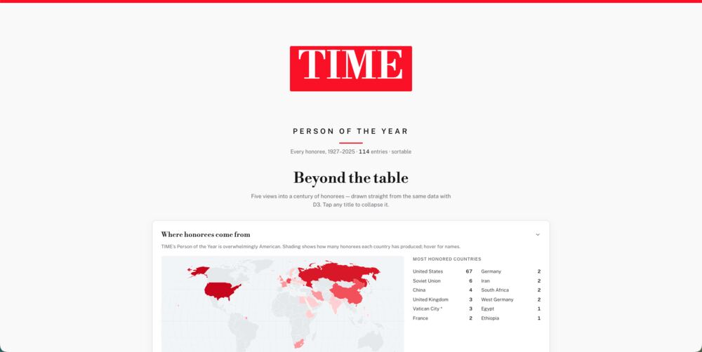
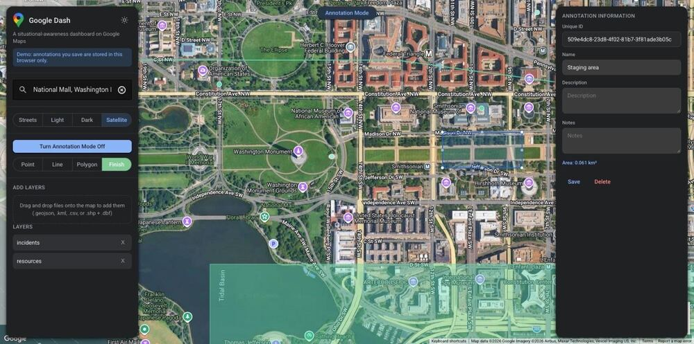

About
I'm a customer engineer and technical educator with 8+ years of experience helping enterprise engineering teams adopt developer platforms across mapping, identity, and cloud.
I build working demos and open-source tooling, teach engineers through workshops and conference talks, and use Claude Code on both personal and work projects.
My foundation is in cartography (M.S., UW–Madison) and identity and access management (Okta), which still shapes how I think about cloud and AI security.
Projects
-

TIME Person of the Year
A React and D3 app, built with Claude Code, for exploring every TIME Person of the Year honoree from 1927 to 2025. It pairs a sortable table with five interactive charts: a world map by country, a streamgraph of categories over time, a timeline of the honor's wording, an age-at-honor beeswarm, and repeat honorees.
-

-
Google Maps Platform Postman collection
An open-source collection I lead. It won Postman's 2025 Top New API award, with 95K+ views and 1.1K+ forks.
-
dashlane-auditor
A command-line tool that audits a Dashlane vault for breached, reused, and weak passwords and walks you through rotating them. Breach checks use HaveIBeenPwned's k-anonymity API, so only partial hashes ever leave your machine.
-
Rapid Deploy
Formerly Quick Launch: an open-source drag-and-drop dashboard for situational-awareness apps that need little to no code, published at Mapbox.
-
Hootenanny UI
Front-end development (2016–2017) on the open-source web interface for Hootenanny, a vector map-data conflation tool built on the OpenStreetMap iD editor.
Teaching & Speaking
- Speaker on API adoption strategy at Postman's API GTM conference and SF Tech Week (2025)
- Led 10+ hands-on technical workshops for enterprise engineering teams
- Co-founder and mentor, PreSales Collective DC chapter (2021–2024)
- Graduate teaching assistant for Introduction to Cartography at UW–Madison; Olmstead Departmental Award for Outstanding Teaching Assistant
Experience
-
Senior Customer Engineer, Google
- Designed and led a hands-on technical workshop for a national membership organization's engineering team, which led multiple organizations in its network to adopt Google Maps Platform and resulted in a signed strategic agreement.
- Designed and delivered 3+ enablement sessions for 15+ Customer Engineers and Sales Reps, and developed a standardized demo platform, which led to shared technical best practices across the team.
- Lead the open-source Google Maps Platform Postman collection (95K+ views, 1.1K+ forks), which won Postman's 2025 Top New API award and helped shorten customer and partner testing times.
- Built Gemini + Google Maps Platform demos for customer sessions, which let customers see the solution working on their own use case and contributed to signed Gemini + Google Maps Platform agreements.
- Own the technical relationship for a portfolio of strategic enterprise accounts, leading discovery, solution design, and integration support.
- Turned partner feedback into specific requests for Maps product and engineering teams, which influenced API design, pricing, and roadmap decisions.
-
Lead Enterprise Solutions Engineer, Okta
- As the sole Solutions Engineer for a territory of large, high-security, highly regulated accounts, designed IAM architectures and proofs of concept on the Okta platform and APIs.
- Guided customer security and IT teams through SSO (SAML, OIDC), SCIM provisioning, Active Directory, and access-policy design, which resulted in production rollouts across large, highly regulated organizations.
- Wrote reference architectures and technical content for customer-specific implementation patterns.
- Distilled customer feedback into product requirements, which influenced platform features for security-conscious enterprise customers.
-
Enterprise & Government Solutions Engineer, Mapbox
- Designed proofs of concept on Mapbox APIs with JavaScript, D3, Node, Express, AWS, and Postgres.
- Led publication of Rapid Deploy (formerly Quick Launch), an open-source drag-and-drop dashboard for situational-awareness apps, which let customers build with little to no code, and led to use across 3+ customers.
- Built a library of 60+ reusable demos for Account Executives and fellow Sales Engineers.
- Maintained the Mapbox Postman collection, which simplified API testing for partners and developers.
-
UX Engineer, Esri
- Led UX design and Ember component development for ArcGIS Hub, building prototypes and a consistent charting experience that shaped the shipped product.
-
UI/UX Developer, DigitalGlobe
- Directed UI design and front-end development on a major enterprise contract, and built a Node app that automated browser certificate creation for users.
-
Cartographer, University of Wisconsin–Madison
- Project lead on a two-year statewide government contract, working on every stage from design to delivery.
- Rapidly created a black-and-gray map to meet strict specifications and a tight deadline.
- Started the Cartography Lab's Twitter and GitHub accounts to promote the lab and standardize code storage.
Education
- M.S., Cartography and GIS, University of Wisconsin–Madison Read my thesis (PDF)
- B.A., Geography, University of South Carolina
Awards
- Olmstead Departmental Award for Outstanding Teaching AssistantUW–Madison Department of Geography
- Trewartha Graduate Research AwardUniversity of Wisconsin–Madison
- Donald O. Bushman Cartographic AwardUniversity of South Carolina Department of Geography
- Magna Cum LaudeUniversity of South Carolina
- Eagle ScoutBoy Scouts of America